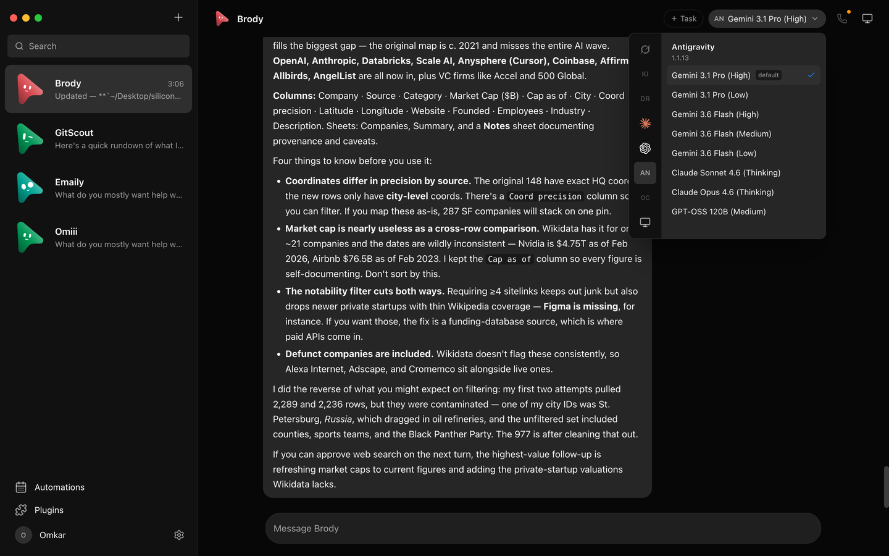
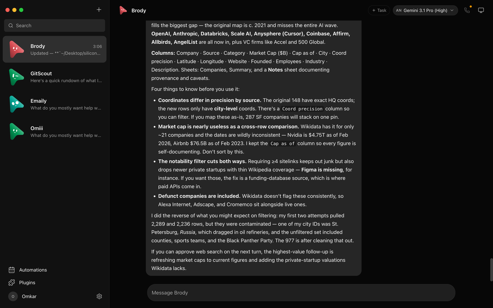
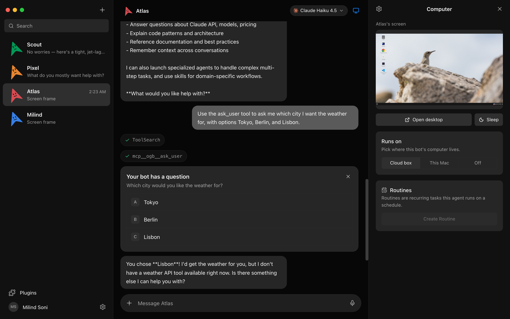
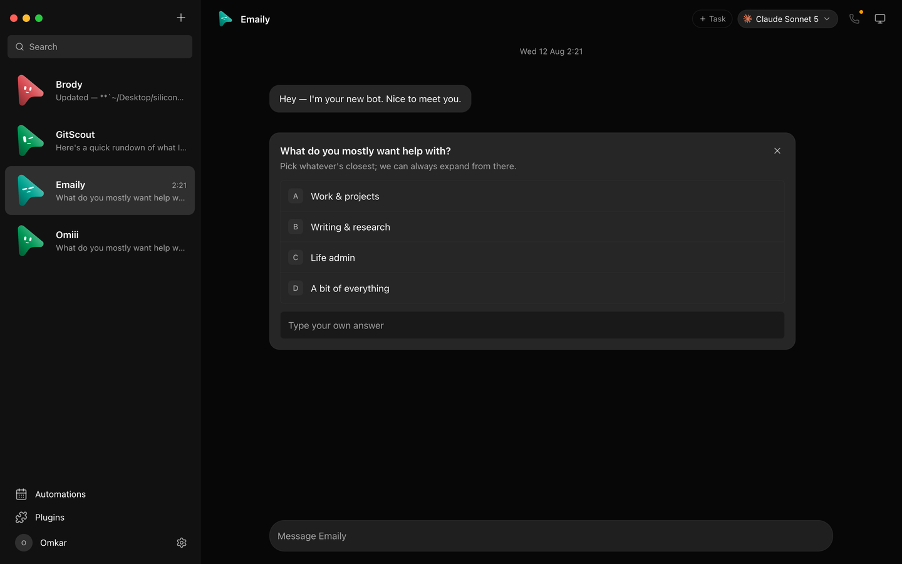
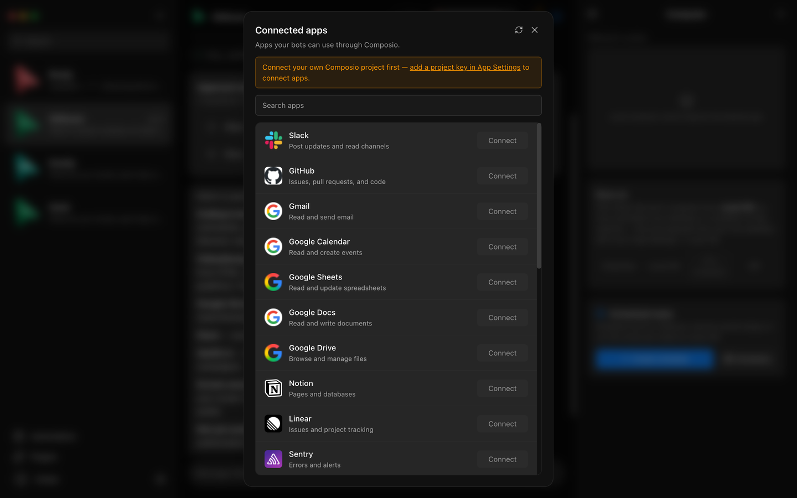

Pick a brain per bot
Claude, Codex, and OpenCode models side by side, in one picker. Switch a bot's model mid-conversation — or let Auto pick the strongest for the task.

KodBot is an open-source desktop app where every chat is a real agent — Claude, Codex, or OpenCode running locally under the hood. Each bot has its own personality, model, computer, and connected apps. Talk to them like contacts. Watch them work. Approve what matters.
Windows: one-click installer, no admin rights. macOS build is pending — the latest release currently ships Windows only.

A messaging app for agents, with the controls you'd want before letting software act on your machine.
Claude, Codex, and OpenCode models side by side, in one picker. Switch a bot's model mid-conversation — or let Auto pick the strongest for the task.

A cloud Linux desktop it drives while you watch, or point the bot at your own machine. Take over in the browser any time.

Shell commands, file edits, and questions arrive as inline cards — Allow, Deny, or answer in chat. Every risky action becomes your decision.

Gmail, Slack, GitHub, Notion, Linear and more through Composio. OAuth once, and every bot can use them as tools.

Group bots into teams with a leader, create shared team rooms, transfer leadership, and keep ungrouped bots where you expect them.
Bring your own subscriptions and API keys. Transcripts, keys, and events live in a local folder on your machine — not a cloud account.
Install a packaged build, or run it from source. You need at least one agent CLI already installed and logged in.
One-click, per-user installer. Not code-signed yet, so SmartScreen shows "unknown publisher" — choose More info → Run anyway.
Download .exeBuild pending. Watch the releases page for the signed and notarized .dmg; only Windows ships today.
# from source
git clone https://github.com/kod13eood-cmd/KodBot
cd KodBot
pnpm install
pnpm dev:server # harness → 127.0.0.1:8799
pnpm dev # app → http://127.0.0.1:5199
pnpm dev:desktop # Electron shell